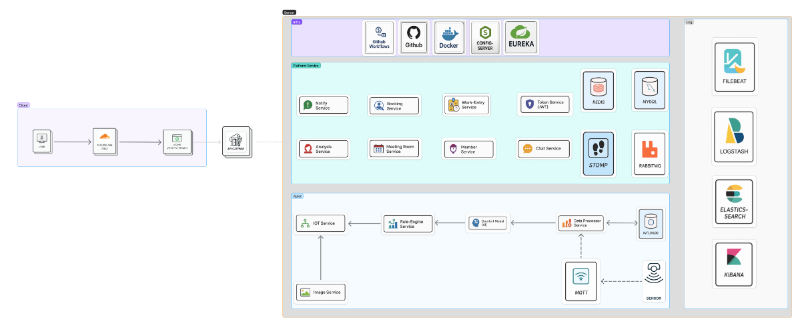

Pangyo Coffee Legends
"1년 뒤 판교 스타벅스에서 모이자!" — AI + IoT 기반의 스마트 오피스 통합 관제 시스템
My Role
- 출입 로그 기반 근태 분석 파이프라인 설계
- 일/주/월 단위 리포트 자동 생성
- GenAI 기반 자연어 리포트 초안 생성
- 품질 지표 설계 및 측정
프로젝트 개요
AI 및 IoT 기술을 융합하여 쾌적한 업무 환경과 효율적인 오피스 운영을 구현하는 통합 솔루션입니다. 실시간 센서 데이터, AI 분석, 자동화 제어, 대시보드 시각화를 통해 스마트 오피스를 실현합니다.
내가 구체적으로 기여한 것
근태 분석 파이프라인
출입 로그 전처리 → 근무 시간 계산(지각/조퇴/초과 포함) → 이상 패턴 탐지 룰 정의까지 전체 데이터 파이프라인을 설계하고 구현했습니다.
리포트 자동화
일/주/월 단위 근태 리포트 템플릿을 정의하고, CSV/HTML 요약 및 대시보드 지표와 연동하여 보고서 생성 시간을 70% 단축했습니다.
GenAI 기반 분석
근태/예약 로그를 요약·설명하는 자연어 리포트 초안을 생성(질의응답 형태)하고, 이상 이벤트에 대한 설명을 보조하는 GenAI 모듈을 구축했습니다.
품질 지표 설계 및 측정
근태 산출 정확도, 누락 로그 탐지율, 보고서 생성 시간 등 정량적 품질 지표를 설정하고 측정 체계를 구축했습니다.
운영 문서화
데이터 스키마/룰 정의서, 운영 Runbook, 장애 대응 가이드 등 팀 전체가 참고할 수 있는 기술 문서를 체계적으로 정리했습니다.
기술적 도전과 성장
출입 로그 데이터의 형식이 일관되지 않고, 누락/중복 로그가 혼재하여 정확한 근무 시간을 산출하기 어려웠습니다.
데이터 전처리 단계에서 누락 로그를 탐지하는 룰을 정의하고, 지각/조퇴/초과근무를 자동 분류하는 로직을 설계하여 근태 산출 정확도를 향상시켰습니다.
일/주/월 단위로 반복되는 근태 보고서 작성을 수작업으로 처리하면 시간이 많이 소요되고 실수가 발생할 수 있었습니다.
리포트 템플릿을 정의하고 자동 생성 파이프라인을 구축한 뒤, GenAI로 핵심 내용을 자연어로 요약하는 기능까지 연동하여 보고서 생성 시간을 70% 단축했습니다.
전체 시스템 주요 기능
| 기능 | 설명 |
|---|---|
| 환경 센싱 및 저장 | 센서 데이터를 MQTT/Modbus로 수집하고 InfluxDB에 시계열 저장 |
| AI 쾌적도 분석 | 온·습도/CO2 기반 쾌적도 예측 모델(XGBoost 등)로 가동/알림 정책 연계 |
| 환경 모니터링 | 기기/룰/장소 관리, 이상 탐지, 경보/자동 제어 규칙 |
| 출입 통제/근태 분석 | 출입 로그 기반 근무 시간 산출, 이상 패턴 탐지, 리포트 자동화 (내 담당) |
| ELK 로그 모니터링 | Filebeat → Logstash → Elasticsearch → Kibana 대시보드 구성 |
| 회의실 예약 시스템 | 예약/입장/노쇼/연장 등 워크플로우 및 권한 관리 |
| 실시간 채팅/알림 | STOMP 기반 실시간 채팅, 운영 알림 팝업/푸시 |
시스템 아키텍처

Tech Stack
Team
| 이름 | 담당 역할 | GitHub |
|---|---|---|
| 김미성 | 근태 분석 · 리포트 · GenAI 기반 분석 | @Migong0311 |
| 최인호 | 쾌적도 AI · ELK 로그 · CI/CD · 통합 인프라 | @dusen0528 |
| 신현섭 | 채팅 시스템 · 실시간 알림 | @HyunSubb |
| 김경영 | 출입 통제 · 근태 분석 | @rudduddl |
| 강승우 | 환경 모니터링 · 이상 탐지 · Rule Engine | @oculusK |
| 박형호 | 환경 모니터링 · IoT 서비스 · JS 연동 | @phh624 |
| 전유림 | 회의실 예약 · 알림 · 대시보드 | @Jyurim |
| 김지윤 | 회의실 CRUD · 회의실 예약 건 입실 통합관리 · 통계 | @LEMON4DE |